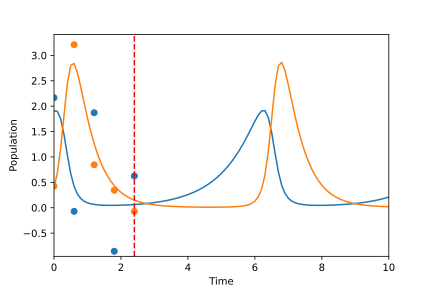
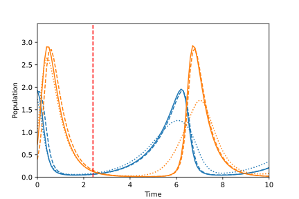

Quick Start¶
Installation¶
This project is available on pypi! Install with:
pip install trajectory_manifold
This project depends on jax 0.4.3+, diffrax 0.3.0+, and jaxtyping.
Note that jax installation is a bit more specialized and requires selection dependent on your particular system. Thus, it is advised that you install it before this package.
This tutorial additionally uses the library optax for gradient-based optimization.
Problem Setup¶
The key insight in this project is to interpret forecasting of ODE based systems as a reparameterization of the state estimation problem. Throughout the remainder of the quickstart page, we demonstrate a method to do minimum mean squared error estimation (MMSE) on the manifold of solutions to a differential equation.
In this example, we will use the Lotka-Volterra system, provided in the
examples module of the library.
This periodic system represents a simple predator-prey population model.
We begin by initializing the system and choosing the parameters for the ODE solvers.
from trajectory_manifold import examples
from trajectory_manifold.manifold import SolverParameters
from diffrax import Heun, ConstantStepSize
vector_field = examples.lotka_volterra_vector_field(1,2,4,2)
parameters = SolverParameters(stepsize_controller = ConstantStepSize(),
step_size_internal = 0.05,
step_size_output = 0.1,
time_interval = (0,10.1),
solver = Heun(),
max_steps = 16**5)
Next, we construct a helper function to compute solutions of the ODE given
a collection of initial conditions.
To do so, we wrap diffeqsolve from Diffrax to construct a representation
of \(\psi\), or the transformation from initial conditions to the manifold of solutions.
We additionally include an automatic vectorization of \(\psi\) using vmap in Jax.
While code is included here, see the the documentation for Jax and Diffrax for more information.
from diffrax import ODETerm, SaveAt, diffeqsolve
from jax import jit, vmap
import jax.numpy as jnp
term = ODETerm(vector_field)
solver = parameters.solver
system_parameters = ()
observation_times = jnp.arange(parameters.time_interval[0],
parameters.time_interval[1],
step=parameters.step_size_output)
saveat = SaveAt(ts = observation_times)
stepsize_controller = PIDController(rtol = parameters.relative_tolerance,
atol = parameters.absolute_tolerance)
@jit
def SolveODE(initial_state):
return diffeqsolve(term,
solver,
t0 = parameters.time_interval[0],
t1 = parameters.time_interval[1],
dt0 = parameters.step_size_internal,
saveat = saveat,
stepsize_controller = stepsize_controller,
y0 = initial_state).ys
solveODE_v = vmap(SolveODE)
Next, define our likelihood function and prior. We will consider the case of additive standard multivariate Gaussian noise, where the conditional distribution of the observation given the state is given by the following.
We further assume a uniform prior over a feasible set of initial conditions.
For numerical stability, we will encode these in terms of their log likelihood and their log prior.
from math import pi
def observation_log_likelihood(observation, state):
"""Compute log p(y|x) for a given observation and state"""
partition = jnp.power(2 * pi, -observations.shape[1]/2.0)
return jnp.log(partition) - jnp.sum(jnp.square(observation - state))/2
def state_log_prior(state, system_parameters):
"""Compute log p(x) for a given state"""
return -1 * jnp.log(4)
Generate Observations¶
We next simulate an observation process. To do so, we solve the ODE and add noise to each sample. As the focus is forecasting with limited data, we then only take 5 measurements, each spaced by 0.6 seconds of simulation time.
from jax import random
dimension = 2
subsample = 6
center = 1.2
key = random.PRNGKey(123)
key, subkey = random.split(key)
true_init = 2 * random.uniform(subkey, shape=(dimension,)) + center - 1
states = SolveODE(true_init)
key, subkey = random.split(key)
noise = random.normal(subkey, shape=states.shape)
observations = states + noise
observation_times = observation_times[:30:subsample]
observations = observations[:30:subsample,:]
In the plot below, the solid lines represent the predator and prey populations, the dots represent our observations, and the vertical dashed red line represents the final observation time.
{kind=link}
Given the observation data and the known ODE model, our goal is to predict the entire predator-prey population curve over the 10 second time interval.
State Posterior¶
We now use the estimation module to convert our log likelihood, log prior,
and observations, and system definitions into an unnormalized log posterior.
The following code constructs a function posterior_state which
represents
for some unknown constant \(Z\).
from trajectory_manifold import estimation
log_posterior_state = estimation.state_log_posterior(vector_field,
observations,
observation_times,
observation_log_likelihood,
state_log_prior,
parameters)
@jit
def posterior_state(state):
return jnp.exp(log_posterior_state(state, system_parameters))
For sampling applications, it is desirable to have a vectorized version
of posterior_state, which can be constructed using vmap, below.
posterior_state_v = vmap(posterior_state)
Importance Sampling¶
We now compute the ambient minimum mean squared error (MMSE) trajectory through importance sampling.
While more sophisticated sampling techniques may be used, we approximate the conditional expectation as
where each \(\mathbf{X}_i\) is drawn i.i.d. from the prior distribution.
Next, compute 100000 samples of initial conditions from our prior distribution.
sample_count = 100000
key, subkey = random.split(key)
samples = 2 * random.uniform(subkey, shape=(sample_count, dimension,)) + center - 1
Compute the associated solutions and unnormalized distributions.
sample_weights = posterior_state_v(samples)
sample_sols = solveODE_v(samples)
Finally, compute the estimate by averaging the trajectories.
estimate = jnp.sum(sample_weights[:,None,None] * sample_sols, axis=0)/jnp.sum(sample_weights)
In the plot below, we see the true predator-prey populations over time as dashed lines, while the MMSE estimate based on the previous observations as solid lines. The key observation is that, while the MMSE estimate is optimal, it suffers from oversmoothing the further beyond the observed region the forecast extends. Thus, while the function fits the probability distribution in some sense, it does not result in a valid solution of the differential equation, and does not qualitatively capture the structure of the future.

Projection¶
Finally, we project the unconstrained solution onto the manifold. This results in the constrained MMSE solution by the orthogonality principle.
Because the manifold is curved, this is not a linear projection.
We instead use optax to optimize through a gradient descent.
Begin by computing the pullback of the gradient on the manifold through the ODE solver.
To do so, we provide the function distance_gradient.
from trajectory_manifold import optimize
g = lambda state: optimize.distance_gradient(state,
system_parameters,
vector_field,
estimate,
parameters)[0]
g = jit(g)
Next, import optax and configure the learner.
For this example, we will use the ADAM optimizer.
import optax
start_learner_rate = 1e-1
optimizer = optax.adam(start_learner_rate)
Choose an arbitrary initialization.
state = jnp.ones(2) * .4
opt_state = optimizer.init(state)
Apply steps of the ADAM optimizer to compute the MMSE estimate.
step_count = 100
for i in range(step_count):
grads = g(state)
updates, opt_state = optimizer.update(grads, opt_state)
state = optax.apply_updates(state, updates)[0]
The variable opt_state now contains \(\psi^{-1}(\hat{\mathbf{x}})\).
We must solve the ODE one final time to compute our estimate.
trajectory_estimate = SolveODE(state)
Finally, we show the results of our projection onto the manifold of feasible trajectories in the image below. The solid lines represent the MMSE estimate on the manifold, the dashed lines represent the true populations, and the dotted line represents the MMSE estimate in the ambient space. Note that the projection does a significantly better job capturing the periodic structure of the solution space.
{kind=link}
Below, we include a video of the convergence of the ADAM optimizer, demonstrating the path of points in the gradient based optimization.